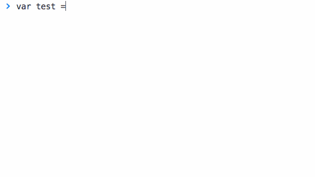

1. The Basics
To Kreate something, just enter in the code below:
$.kreate();
Congrats! You just kreated your first element. By default, if arguments are missing from $.kreate(), Kreate will make an empty <div>.
<div></div>
Currently about 1.58kb minified
$.kreate('div#post.my-class', 3);
<div class="my-class" id="post-1"></div> <div class="my-class" id="post-2"></div> <div class="my-class" id="post-3"></div>
Kreate is a tiny helper method for jQuery that can quickly generate DOM elements as a standard jQuery object. You can "Kreate" a single element (such as a <div>) or up to however many elements your browser can handle before crashing*.
* I was able to generate 15 million elements. I tried 1 billion once, but then Chrome crashed :(
Simply download Kreate and add the kreate.js / kreate.min.js file to your project. The file should be located in dist/kreate.js.
Bower is awesome. If you're using Bower, you can download/install Kreate with the following command line:
bower install kreateLoad it up after jQuery, and you should be good to go!
<script type="text/javascript" src="js/jquery.min.js"></script>
<script type="text/javascript" src="js/kreate.min.js"></script>
In most cases, Kreate can create a single or multiple elements faster than jQuery - sometimes, significantly faster.
Below are a couple of performance test results. For a more detailed breakdown, check out the results over on JSPerf.
Creating an element with a class |
|||
|---|---|---|---|
| Code | Ops/Sec | Performance | |
| Kreate | $.kreate('div.hello'); | 139,815 | Faster! |
| jQuery | $('<div class="hello"></div>'); | 17,838 | 87% slower |
Creating 10 elements |
|||
| Code | Ops/Sec | Performance | |
| Kreate | $.kreate('li', 10); | 66,254 | Look at it go! |
| jQuery | $('<li></li><li></li><li></li><li></li><li></li><li></li><li></li><li></li><li></li><li></li>'); | 9,761 | 83% slower |
Creating 10 elements, then appending them |
|||
| Code | Ops/Sec | Performance | |
| Kreate | $div.append( $.kreate('li', 10) ); | 9,764 | Not bad! |
| jQuery | $div.append( $('<li></li><li></li><li></li><li></li><li></li><li></li><li></li><li></li><li></li><li></li>') ); | 6,474 | 32% slower |
Welcome to the tutorial portion of Kreate! Below are a some snippets and guides to help you become a master of kreation. Are you ready? Of course you are. You were born ready. You were born awesome.
To Kreate something, just enter in the code below:
$.kreate();
Congrats! You just kreated your first element. By default, if arguments are missing from $.kreate(), Kreate will make an empty <div>.
<div></div>
There are two ways you can kreate elements - express and advanced. For this portion of the tutorial, we're going to be focusing on the express method. It's cleaner, faster, and goes great with salad.
To express kreate something, enter a string into the kreate function.
Format: $.kreate( ' selector#id.class ' );* Just a heads up, you can only add one class to the element. Adding additional classes like this ".class1.class2.class3" does nothing - Nothing!.
Now that you know the express formatting, let's start expressing ourselves!
Let's try express kreating a div with a class..
$.kreate('div.fancy');
Awesome! Wow, you're doing great. You just made this:
<div class="fancy"></div>
Next, let's try something a little fancier. Let's make a div with an ID & a class:
$.kreate('div.#goodness.super-fancy');
Great work - You just made this:
<div id="goodness" class="super-fancy"></div>
Yes, oh yes. You can make multiple elements with the express method. In fact, you can make as many elements as your heart desires! Well, almost.. 12 million divs is a bit much.
All you have to do is add a number after your string. Let's try it:
$.kreate('div.fancy', 7);
Did you just make 7 divs? Yes you did - what a baller!
<div class="fancy"></div> <div class="fancy"></div> <div class="fancy"></div> <div class="fancy"></div> <div class="fancy"></div> <div class="fancy"></div> <div class="fancy"></div>
By default, Kreate makes a jQuery object with all of your wonderful elements neatly wrapped inside. Alternatively, you can output your elements either as an HTML string or as a good ol' fashioned array.
To change the output type, just add either HTML or array as the third argument in the kreate function.
$.kreate('div.topic', 2, 'html');
// This snippet should return
// '<div class="topic"></div><div class="topic"></div>'
$.kreate('div.topic', 2, 'array');
// This snippet should return
// [<div class="topic"></div>, <div class="topic"></div>]
It looks like you've mastered the express method. I tip my hat off to you. However noble one, are you ready to take on advanced? Why did I even bother asking, of course you are!
Instead of a string, advanced kreation works by entering an object into the Kreate function.
$.kreate({
tag: 'div', // selector
class: 'item', // class
id: 'post', // id
length: 5, // # of elements
attr: { // attributes
'data-lazy': true
},
content: "" // content inside element
uniqueId: true, // id numeration
startId: 1 // id numeration start point,
output: 'jquery'// output type
});
There's definitely more code to write compared to express. The benefit of advanced kreation is that you'll be able to enter in (custom) attributes, such as the 'src' attribute for an 'img' element. You'll also be able to define the starting ID when element ID's are numerated (more on that later!).
Let's try making five <li> elements, with a class of "item" and a custom data-load attribute of "inactive":
$.kreate({
tag: 'li',
class: 'item',
length: 5,
attr: {
'data-load': inactive
},
});
Phew! That wasn't so bad! You just made this:
<li class="item" data-load="inactive"></li> <li class="item" data-load="inactive"></li> <li class="item" data-load="inactive"></li> <li class="item" data-load="inactive"></li> <li class="item" data-load="inactive"></li>
The gif below shows how you can advance kreate a jQuery object with five divs with the class of "yay".

These settings are specific to advance and only kick in if you're making multiple elements & have an ID defined. This is to make sure that your chosen ID isn't duplicated during the kreation process.
As mentioned above, Kreate will automatically numerate IDs if you're making more than one element. By default, Unique ID is switched on. It is highly recommended that you leave this setting alone.. it smells..
But, if you really need to, setting uniqueId to false switches off numeration.
Let's see some ID numeration in action shall we?
$.kreate({
tag: 'li',
id: 'task',
class: 'item',
length: 3
});
Goodness - Look at what you just made! Numerated IDs? Heck yes!
<li class="item" id="task-1"></li> <li class="item" id="task-2"></li> <li class="item" id="task-3"></li>
By default, numerating IDs start at 1. But, with a little bit of magic and a handful of Ke$ha glitter, you can change the starting ID to whatever you want!
$.kreate({
tag: 'li',
id: 'task',
class: 'item',
length: 3,
startId: 15
});
Is it magic? No.. just plain ol' Ke$ha glitter.
<li class="item" id="task-15"></li> <li class="item" id="task-16"></li> <li class="item" id="task-17"></li>
Welp, that's it for Kreating 101! By now, you should be a master kreator. If you want more details on the various features and settings, check out the project on Github.
Go on! You have all the tools. You got your jQuery, your hard hat with a light on it, and your favorite pair of yellow rainboots. What are you waiting for?
Start Kreating stuff. Adventure is out there!
Any and all feedback is welcome! Feel free to hit me up on Twitter.